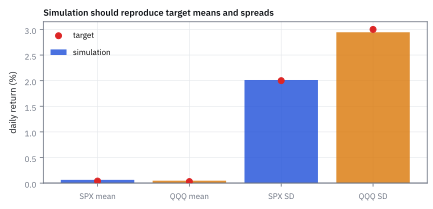

8.9 Simulating the MVN with the Cholesky Decomposition
คอมพิวเตอร์สุ่มได้แค่ตัวเลข Normal ที่ไม่เกี่ยวข้องกัน หน้านี้ผสมตัวเลขพวกนั้นด้วย matrix สามเหลี่ยมล่าง $L$ ที่ $LL^{\mathsf T}=\Sigma$ จนได้ผลตอบแทนหลายตัวที่ขยับร่วมกันตาม covariance $\Sigma$ ที่ต้องการพอดี
ทีมความเสี่ยงอยากรู้ว่าพอร์ตที่ถือสินทรัพย์สองตัวจะขาดทุนได้หนักแค่ไหนในปีหน้า วิธีหนึ่งคือให้คอมพิวเตอร์ “เล่นปีหน้า” หลายหมื่นรอบ แต่ละรอบสุ่มผลตอบแทนของทั้งสองตัว แล้วนับว่ากี่รอบขาดทุนหนัก ความยากอยู่ที่สองตัวนี้ไม่ได้ขึ้นลงแยกกัน มันมักขึ้นด้วยกันและลงด้วยกัน ผลสุ่มจึงต้องมีนิสัยแบบนี้ด้วย
ของที่รู้ (ตัวเลขสมมติ):
- ตัวแรกแกว่งปีละ $\sigma_1=20\%$ ตัวเลขนี้คือ SD (standard deviation ขนาดการแกว่งโดยทั่วไปรอบค่าเฉลี่ย ดูvariance and standard deviation) ของผลตอบแทนรายปี
- ตัวที่สองแกว่งแรงกว่า $\sigma_2=30\%$ ต่อปี
- correlation ของสองตัว $\rho=0.6$ ตัวเลขนี้วัดว่าสองตัวขยับไปทางเดียวกันแค่ไหน มีค่าตั้งแต่ −1 (สวนกันเสมอ) ถึง 1 (ไปทางเดียวกันเป๊ะ) ดูinner product, angle, and correlation
- ค่าเฉลี่ยของผลตอบแทนให้เป็น 0 ไปก่อน เพื่อดูแค่การแกว่ง
เครื่องสุ่มในคอมพิวเตอร์ให้ได้อย่างเดียวคือตัวเลข $z_1, z_2$ แบบ standard Normal คือรูประฆังที่มีค่าเฉลี่ย 0 และ SD 1 สองตัวนี้อิสระต่อกัน แปลว่ารู้ค่าตัวหนึ่งแล้วไม่ได้บอกอะไรเกี่ยวกับอีกตัวเลย เรียกตัวเลขสุ่มแต่ละตัวว่า shock เพราะมันคือแรงสุ่มที่ผลักผลตอบแทนขึ้นหรือลง
ตัวแรกทำได้ง่าย $r_1=0.20z_1$ มี SD 20% เพราะ $z_1$ มี SD 1 ตัวที่สองต้อง “ยืม” $z_1$ มาบางส่วนจึงจะขยับตามตัวแรก เพื่อนร่วมทีมเสนอสูตรนี้ โดยให้เหตุผลว่า “เอา 60% จาก shock ของตัวแรก อีก 40% เป็น shock ของตัวเอง แล้วขยายด้วย 30%”
สูตรนี้ให้ SD 30% และ correlation 0.6 ไหม
ลองตอบก่อนเปิดเฉลย
ไม่ได้ทั้งสองอย่าง เพราะ variance (SD ยกกำลังสอง) ของผลรวมของก้อนที่อิสระกัน เท่ากับผลรวมของ variance แต่ละก้อน น้ำหนักแต่ละก้อนจึงถูกยกกำลังสองก่อนรวม ส่วน covariance มาจากส่วนที่สองตัวมีร่วมกัน ซึ่งคือ $z_1$ เท่านั้น จึงคิดได้แบบนี้
ได้ SD 21.63% แทน 30% และ correlation 0.832 แทน 0.6 น้ำหนักสองก้อนต้องยกกำลังสองแล้วรวมได้ 1 ถ้าก้อนแรกเป็น 0.6 ก้อนที่สองต้องเป็น $\sqrt{1-0.6^2}=0.8$ สูตรที่ถูกจึงเป็นแบบนี้
ถ้าเครื่องสุ่มได้ $z_1=1.4$ และ $z_2=-0.7$ ตัวแรกได้ $0.20\times1.4=+28.0\%$ ตัวที่สองได้ $0.18\times1.4+0.24\times(-0.7)=+8.4\%$ หน้านี้จะหาที่มาของ 0.18 กับ 0.24 ให้ดูทีละขั้น
ภาพรวมก่อนลงสูตร
หน้าlinear combinations เริ่มจากผลตอบแทนหลายตัวที่ขยับร่วมกันแบบ MVN (multivariate Normal: Normal หลายตัวที่มี covariance ระหว่างกัน) แล้วรวมเป็นตัวเลขตัวเดียวคือผลตอบแทนของพอร์ต หน้านี้เดินทางกลับ เริ่มจากเลขสุ่มที่ไม่เกี่ยวกัน แล้วผสมให้กลายเป็นผลตอบแทนที่ขยับร่วมกันตามที่ต้องการ
ทำไมต้องสุ่ม เพราะหลายคำถามไม่มีสูตรสำเร็จให้แทนค่า ตัวอย่างแรกคือ VaR (Value at Risk ระดับขาดทุนที่จะถูกเกินไม่บ่อย เช่นแค่ 5 ครั้งใน 100 ครั้ง ดูvalue at risk and expected shortfall) ของพอร์ตที่มี option ซึ่งกำไรขาดทุนไม่เป็นเส้นตรงตามราคา ตัวอย่างที่สองคือราคาของ derivative ที่จ่ายเงินตามราคาของหลายสินทรัพย์พร้อมกัน ทางที่เหลือคือสุ่ม scenario (อนาคตสมมติหนึ่งชุด) จำนวนมาก แล้วนับผล
เครื่องมือคือการคูณ matrix ผลตอบแทนแต่ละตัวเป็นผลรวมถ่วงน้ำหนักของ shock (ตัวเลขสุ่มอิสระหนึ่งตัวที่ผลักผลตอบแทนขึ้นหรือลง) ตัวแรกใช้ shock แรกอย่างเดียว ตัวที่สองใช้ shock แรกบางส่วนกับ shock ของตัวเองบางส่วน ตัวที่สามใช้สาม shock แรก ไล่ไปแบบนี้ ช่องเหนือแนวทแยงของ matrix น้ำหนักจึงเป็นศูนย์หมด เรียกว่า matrix สามเหลี่ยมล่าง และแก้ได้ทีละแถวจากบนลงล่าง matrix นี้ชื่อ Cholesky factor รูปด้านล่างแสดงว่ามันทำอะไรกับเมฆจุดสุ่ม
ลำดับของหน้านี้
- หา $L$ ของสองสินทรัพย์ด้วยมือ แล้วตามผลสุ่มหนึ่งรอบให้เห็นทีละก้าว
- พิสูจน์ว่าวิธีนี้ให้ทั้ง covariance ที่ถูกและรูปทรง Normal ครบ แล้วเขียนสูตรทั่วไปสำหรับกี่สินทรัพย์ก็ได้
- ใช้กับสามสินทรัพย์ของโต๊ะเทรด และเทียบกับวิธี factor เดียวที่แบบจำลองสินเชื่อใช้
- สุ่มจริง 200,000 รอบ ตัดสินว่าคลาดจากเป้าแค่ไหนจึงปกติ แล้วอ่าน VaR จากผลสุ่ม
- ป้อนตารางที่เป็นไปไม่ได้ ดูว่า Cholesky ร้องเตือนตรงไหน และซ่อมแล้วเสียอะไรไป
รูป — คูณด้วย L เปลี่ยนเมฆกลมเป็นเมฆเอียง
ศัพท์ที่ใช้ในหัวข้อนี้
- Shock
- ตัวเลขสุ่ม standard Normal หนึ่งตัว (ค่าเฉลี่ย 0, SD 1) ที่ผลักผลตอบแทนขึ้นหรือลง shock แต่ละตัวอิสระต่อกัน
- Cholesky factor $L$
- matrix สามเหลี่ยมล่างที่แนวทแยงเป็นบวกและ $LL^{\mathsf T}=\Sigma$ ใช้ผสม shock ที่อิสระต่อกันให้กลายเป็นผลตอบแทนที่ขยับร่วมกันตาม $\Sigma$
- Lower-triangular matrix
- matrix สามเหลี่ยมล่าง คือช่องเหนือแนวทแยงเป็นศูนย์หมด แถวที่ $i$ ใช้ shock แค่ $i$ ตัวแรก จึงแก้ได้ทีละแถวจากบนลงล่าง
- Pivot $p_j$
- ตัวเลขใต้รากที่ถอดแล้วได้ช่องทแยง $\ell_{jj}$ มันคือ variance ของสินทรัพย์ที่ $j$ ส่วนที่สินทรัพย์ก่อนหน้าอธิบายไม่ได้ ถ้าติดลบแปลว่าตาราง covariance ขัดกันเอง
- Positive definite
- สมบัติของ covariance matrix ที่ว่าพอร์ตทุกพอร์ต (ยกเว้นพอร์ตที่น้ำหนักเป็นศูนย์หมด) มี variance เป็นบวก ดูeigenvalues และ positive definiteness สมบัตินี้ทำให้ Cholesky ถอดรากได้ทุกขั้น
- Monte Carlo
- การสุ่ม scenario จำนวนมากแล้วเฉลี่ยหรือนับผล ใช้ประมาณค่าที่ไม่มีสูตรสำเร็จ ดูMonte Carlo และ bootstrap
- Standard error (SE)
- SD ของค่าที่ประมาณได้จากการสุ่ม ถ้าสุ่มชุดใหม่ซ้ำหลายครั้ง ค่าประมาณจะแกว่งรอบค่าจริงด้วยขนาดประมาณนี้
- VaR และ ES
- VaR 95% คือระดับขาดทุนที่จะถูกเกินแค่ 5 ครั้งใน 100 ครั้ง ES 95% (expected shortfall) คือค่าเฉลี่ยของขาดทุนใน 5 ครั้งที่แย่ที่สุดนั้น ดูvalue at risk and expected shortfall
- Seed
- ค่าตั้งต้นของเครื่องสุ่มในคอมพิวเตอร์ ใส่ seed เดิมได้เลขสุ่มลำดับเดิม คนอื่นจึงรันซ้ำและตรวจงานได้
สัญลักษณ์และหน่วย
| สัญลักษณ์ | ความหมาย | หน่วย |
|---|---|---|
| $z$ | vector ของ shock คือ standard Normal อิสระ $d$ ตัว | ไม่มีหน่วย |
| $L,\ \ell_{ij}$ | Cholesky factor และช่องแถว $i$ หลัก $j$ ของมัน | ผลตอบแทนต่อหนึ่งหน่วย shock |
| $\Sigma,\ \mu$ | covariance matrix และ vector ค่าเฉลี่ยที่ต้องการ ใช้ช่วงเวลาเดียวกันและเรียงสินทรัพย์ลำดับเดียวกัน | ผลตอบแทน²; ผลตอบแทน |
| $\sigma_i,\ \rho$ | SD ของสินทรัพย์ที่ $i$ และ correlation ของสองสินทรัพย์ | ผลตอบแทน; ไม่มีหน่วย |
| $r$ | ผลตอบแทนจำลองหนึ่งเส้นทาง | ผลตอบแทนของช่วงที่ระบุ |
| $p_j$ | pivot ตัวที่ $j$ คือ $\ell_{jj}^2$ | ผลตอบแทน² |
| $d,\ n$ | จำนวนสินทรัพย์ และจำนวนเส้นทางที่สุ่ม | นับ |
ขั้นที่ 1 — แก้กรณีสองสินทรัพย์ด้วยมือ
เฉลยของโจทย์เปิดบอกตัวคูณ 0.18 กับ 0.24 มาเฉย ๆ ขั้นนี้หามันให้ได้อย่างมีเหตุผล วิธีคือเขียนรูปของสูตรไว้ก่อน โดยยังไม่รู้ตัวคูณ $a$, $b$, $c$ ตัวแรกใช้ shock $z_1$ ตัวเดียว ตัวที่สองใช้ $z_1$ บางส่วนกับ shock ของตัวเอง $z_2$ บางส่วน
เพราะ $z_1$ กับ $z_2$ อิสระกันและมี variance 1 สูตรของlinear combinations จึงให้ variance และ covariance ของสิ่งที่สร้างได้ทันที แล้วจับให้เท่ากับเป้า เป้ามีสามตัว variance ของตัวแรก $\sigma_1^2=0.20^2$ variance ของตัวที่สอง $\sigma_2^2=0.30^2$ และ covariance $\rho\sigma_1\sigma_2$ ซึ่งได้จากนิยาม correlation $\rho=\operatorname{Cov}/(\sigma_1\sigma_2)$
มีสามเงื่อนไขและสามตัวที่ไม่รู้ แต่ไม่ต้องแก้ระบบสมการพร้อมกัน เพราะแก้ได้ทีละตัว เงื่อนไขของ variance ตัวแรกมีแค่ $a$ พอรู้ $a$ เงื่อนไขของ covariance ก็เหลือแค่ $b$ พอรู้ $b$ เงื่อนไขของ variance ตัวที่สองก็เหลือแค่ $c$ ลำดับที่เรียบร้อยนี้เกิดขึ้นได้เพราะเราจงใจให้ $r_1$ ไม่ใช้ $z_2$ เลย
ดูตัวคูณที่ได้ $0.18=0.30\times0.6$ และ $0.24=0.30\times0.8$ เพราะ $0.6^2+0.8^2=1$ variance ของตัวที่สองจึงกลับมาเป็น $0.30^2$ พอดี สูตรของเพื่อนในโจทย์เปิดใช้ 0.6 กับ 0.4 ซึ่งรวมกันตรง ๆ ได้ 1 แต่ยกกำลังสองแล้วรวมได้แค่ 0.52 จึงพลาด
ทำแบบเดียวกันด้วยสัญลักษณ์แทนตัวเลข จะได้สูตรของสองสินทรัพย์ที่ใช้ได้ทุกกรณี
ตัว $c$ คือ SD ของตัวที่สองส่วนที่เหลือ หลังรู้ค่าตัวแรกแล้ว มันคือตัวเดียวกับความกว้างของรอยตัดในหน้าconditional distribution สองเรื่องนี้จึงเป็นเรื่องเดียวกันที่มองคนละมุม conditional distribution ถามว่าเหลือความไม่แน่นอนเท่าไร ส่วน Cholesky ถามว่าจะประกอบความไม่แน่นอนนั้นกลับขึ้นมาอย่างไร
ขั้นที่ 2 — เส้นทางแรก: เลขสุ่มคู่เดียวให้อะไร
ตอนนี้มีสูตรแล้ว ลองเดินผลสุ่มหนึ่งรอบให้ครบทุกก้าว จะได้เห็นว่าตัวเลขแต่ละตัวมาจากไหน ผลสุ่มหนึ่งรอบเรียกว่าหนึ่ง “เส้นทาง” (path) คือปีหน้าสมมติหนึ่งแบบ
โจทย์ให้อะไรมาบ้าง:
- เครื่องสุ่มพื้นฐานให้เลขสุ่มที่กระจายเท่า ๆ กันระหว่าง 0 ถึง 1 ก่อน รอบนี้ได้ $u_1=0.9192$ และ $u_2=0.2420$
- แปลงเป็น standard Normal ด้วย $\Phi^{-1}$ โดย $\Phi(x)$ คือโอกาสที่ standard Normal ต่ำกว่า $x$ เพราะ $\Phi(1.4)\approx0.9192$ และ $\Phi(-0.7)\approx0.2420$ จึงได้ $z_1=\Phi^{-1}(0.9192)=1.4$ และ $z_2=\Phi^{-1}(0.2420)=-0.7$
- พอร์ตลงเงินในสองสินทรัพย์อย่างละครึ่ง (50/50)
คำตอบ: ปีสมมตินี้ตัวแรกได้ +28.0% ตัวที่สองได้ +8.4% และพอร์ต 50/50 ได้ +18.2% สังเกตว่า $z_2$ ติดลบ แต่ $r_2$ ยังเป็นบวก เพราะแรงดันจาก shock ร่วม $+0.252$ มากกว่าแรงดึงจาก shock ของตัวเอง $-0.168$ นี่คือ correlation ที่ทำงานให้เห็นในเส้นทางเดียว
ตรวจเองใน 10 วินาที: $0.18\times1.4=0.252$ และ $0.24\times0.7=0.168$ จึงได้ $0.252-0.168=0.084$ แต่เส้นทางเดียวพิสูจน์ correlation ไม่ได้ ต้องสุ่มหลายเส้นทางแล้ววัดกลับ ซึ่งขั้นที่ 7 จะทำให้ดู
รูป — ต่อลูกศรสองท่อนให้ได้ผลตอบแทนหนึ่งเส้นทาง
ขั้นที่ 3 — เขียนเป็น matrix แล้วพิสูจน์ว่าได้ทั้ง covariance และ Normal
ขั้นที่ 1 ได้ $L=\begin{bmatrix}0.20&0\\0.18&0.24\end{bmatrix}$ และสูตรผลตอบแทน $r=\mu+Lz$ โดย $\mu$ คือ vector ค่าเฉลี่ยที่ต้องการ (ในโจทย์เปิดเป็นศูนย์) แต่นั่นเป็นแค่ตัวอย่างเดียว ก่อนจะใช้กับพอร์ตจริงต้องรู้ว่าวิธีนี้ให้ covariance ตรงเป้าเสมอ วิธีตอบคือคำนวณ covariance ของสิ่งที่สร้างตรง ๆ
สัญลักษณ์ที่ใช้ $\Sigma$ คือ covariance matrix ที่ต้องการ และเราเลือก $L$ ให้ $LL^{\mathsf T}=\Sigma$ ส่วน $\mathbb E$ คือค่าคาดหวัง (ค่าเฉลี่ยถ้าสุ่มซ้ำไม่รู้จบ) covariance matrix ของ $r$ คือ $\mathbb E[(r-\mu)(r-\mu)^{\mathsf T}]$ และ $r-\mu=Lz$
ความคิดคือย้ายความสุ่มทั้งหมดไปไว้ตรงกลาง แล้วตรงกลางเหลือของที่รู้คำตอบ จังหวะสำคัญคือดึง $L$ ออกนอกค่าคาดหวัง ทำได้เพราะ $L$ เป็นตัวเลขคงที่ที่คำนวณไว้ก่อนสุ่ม ตรงกลางเหลือ $\mathbb E[zz^{\mathsf T}]$ ซึ่งเป็น identity matrix $I$ แนวทแยงเป็น 1 เพราะ $z_k$ แต่ละตัวมี variance 1 นอกแนวทแยงเป็น 0 เพราะ $z_k$ อิสระกัน
สมมติฐานเรื่องเครื่องสุ่มถูกใช้ตรงนี้ที่เดียว ถ้าเลขสุ่มที่ออกติดกันมี correlation แฝงอยู่ $\mathbb E[zz^{\mathsf T}]$ จะไม่ใช่ $I$ แล้วผลจะผิด ทั้งที่พีชคณิตถูกทุกขั้น
covariance ตรงอย่างเดียวยังไม่พอ เพราะ distribution หลายรูปทรงมี covariance เดียวกันได้ ถ้าจะอ่านหางซ้ายอย่าง VaR ต้องรู้ว่า $r$ เป็น MVN จริง เครื่องมือคือ MGF (moment generating function) $M_r(s)=\mathbb E[e^{s^{\mathsf T}r}]$ ซึ่งบอกรูปทรงของ distribution ได้ครบ ถ้า MGF ตรงกับของ MVN แปลว่าเป็น MVN
ตัว $s$ คือ vector ตัวแปรของ MGF เพื่อให้เลขชี้กำลังดูง่าย ตั้งชื่อ $u:=L^{\mathsf T}s$ จะได้ $s^{\mathsf T}Lz=u^{\mathsf T}z=\sum_ku_kz_k$
ความคิดคือแตกของก้อนใหญ่ที่ไม่รู้คำตอบ ให้เป็นชิ้นเล็กที่รู้คำตอบ $e^{u^{\mathsf T}z}$ คือผลคูณของ $e^{u_kz_k}$ หลายตัว จังหวะที่ยากคือแยกค่าคาดหวังของผลคูณออกเป็นผลคูณของค่าคาดหวัง ซึ่งทำได้เพราะ $z_k$ อิสระกัน (consequences of independence) แต่ละชิ้นคือ MGF ของ standard Normal $\mathbb E[e^{tz}]=e^{t^2/2}$
ผลคูณของ exponential รวมเป็นผลบวกในเลขชี้กำลัง ได้ $\sum_ku_k^2=u^{\mathsf T}u=s^{\mathsf T}LL^{\mathsf T}s=s^{\mathsf T}\Sigma s$ ผลสุดท้ายคือ MGF ของ $\mathcal N(\mu,\Sigma)$ พอดี $r$ จึงเป็น MVN จริง ไม่ใช่แค่มี covariance ตรง
ขั้นที่ 4 — สูตรทั่วไป: ถอดทีละช่อง และความหมายของสิ่งที่อยู่ในราก
พอร์ตจริงมีหลายสิบหรือหลายร้อยสินทรัพย์ จึงต้องมีสูตรที่คอมพิวเตอร์ทำซ้ำได้ ให้มี $d$ สินทรัพย์ วิธีทำเหมือนขั้นที่ 1 ทุกอย่าง แค่เขียนด้วยสัญลักษณ์ ให้ $\ell_{ij}$ คือช่องแถว $i$ หลัก $j$ ของ $L$
ช่อง $(i,j)$ ของ $LL^{\mathsf T}$ คือ dot product (คูณทีละคู่แล้วบวก) ของแถว $i$ กับแถว $j$ ของ $L$ เพราะช่องเหนือแนวทแยงของ $L$ เป็นศูนย์ ผลรวมจึงหยุดที่ $\min(i,j)$ เราไล่แก้ทีละหลักจากซ้ายไปขวา ในแต่ละหลักแก้ช่องทแยงก่อน แล้วค่อยแก้ช่องที่อยู่ใต้มัน
ทุกสูตรมาจากสูตรแรกสูตรเดียว เมื่อดูช่องทแยง ($i=j$) สูตรแรกให้ $\Sigma_{jj}=\sum_{k\lt j}\ell_{jk}^2+\ell_{jj}^2$ ย้ายข้างแล้วตั้งชื่อสิ่งที่เหลือว่า pivot $p_j$ ความหมายของมันคือ variance ของสินทรัพย์ที่ $j$ ส่วนที่ shock ของสินทรัพย์ก่อนหน้าอธิบายไม่ได้ ในขั้นที่ 1 pivot ตัวที่สองคือ $0.09-0.18^2=0.09-0.0324=0.0576=0.24^2$
เมื่อดูช่องใต้ทแยง ($i\gt j$) แยกพจน์สุดท้าย $k=j$ ออกจากผลรวม แล้วย้ายข้าง ความหมายคือเอา covariance เป้าหมาย หักส่วนที่ shock ก่อนหน้าสร้างไว้แล้ว แล้วหารด้วย $\ell_{jj}$ ที่เพิ่งได้มา ตัวที่ต้องใช้ทางขวามือคำนวณไว้ก่อนแล้วเสมอ จึงไม่ต้องแก้สมการพร้อมกัน
ทำไม pivot ของตาราง positive definite ถึงบวกเสมอ เพราะ $p_j$ คือ variance ของ “สินทรัพย์ $j$ ลบส่วนที่ทำนายได้จากสินทรัพย์ก่อนหน้า” สิ่งนี้คือพอร์ตหนึ่งที่น้ำหนักไม่เป็นศูนย์หมด ถ้าทุกพอร์ตแบบนั้นมี variance บวก รากก็ถอดได้ทุกขั้น และเพราะเราบังคับให้แนวทแยงเป็นบวก $L$ จึงมีคำตอบเดียว
ขั้นที่ 5 — แบบจำลองรายวันของ desk: SPX, QQQ และกองทุนพันธบัตร
ตอนนี้ลองใช้สูตรทั่วไปกับงานจริงที่มีสามสินทรัพย์ desk (โต๊ะเทรด) อยากสุ่มผลตอบแทนรายวันของสามสิ่งพร้อมกัน เพื่อดูว่าพอร์ตที่ถือทั้งสามตัวจะแกว่งแค่ไหนในหนึ่งวัน
โจทย์ให้อะไรมาบ้าง: สองตัวแรกมาจากแบบจำลองรายวันในหน้าconditional distribution ตัวที่สามเพิ่มเข้ามา (ตัวเลขสมมติ)
- SPX คือดัชนี S&P 500 ของหุ้นใหญ่ 500 ตัวในสหรัฐ SD ต่อวัน $\sigma_1=2\%$
- QQQ คือกองทุนที่ซื้อขายเหมือนหุ้นและวิ่งตามดัชนี Nasdaq-100 ซึ่งหนักไปทางหุ้นเทคโนโลยี SD ต่อวัน $\sigma_2=3\%$
- กองทุนพันธบัตรรัฐบาลระยะยาว SD ต่อวัน $\sigma_3=1\%$
- correlation: SPX กับ QQQ 0.4, SPX กับพันธบัตร −0.3, QQQ กับพันธบัตร −0.2
covariance ของแต่ละคู่คือ $\rho\sigma_i\sigma_j$ ช่องทแยงคือ variance $\sigma_i^2$ เรียงตามลำดับ SPX, QQQ, พันธบัตร
ค่าเฉลี่ยรายวันไม่ต้องใช้ในขั้นนี้ เพราะใน $r=\mu+Lz$ ค่าเฉลี่ยแค่บวกเข้าไปทีหลัง ไม่กระทบ $L$ ไล่ตามสูตรของขั้นที่ 4 ทีละหลัก
คำตอบ: แถวของ QQQ ใน $L$ คือ (1.2%, 2.75%, 0) และแถวของพันธบัตรคือ (−0.30%, −0.087%, 0.95%) ตัวเลขในแถว QQQ ตรงกับหน้าconditional distribution สองตัว ตัวแรก $\ell_{22}\approx2.7495\%$ คือ SD ของ QQQ ที่เหลือหลังรู้ SPX แล้ว ตัวเดียวกับ SD ที่เหลือหลัง hedge ในหน้านั้น ตัวที่สอง $\ell_{21}=0.012=0.6\times0.02$ คือ hedge ratio 0.6 คูณ SD ของ SPX
ตรวจเองใน 10 วินาที: แถวที่สามคือหัวใจของ Cholesky ทั้งพันธบัตรและ QQQ รับ $z_1$ มาแล้ว covariance ส่วนหนึ่งของคู่นี้จึงเกิดขึ้นแล้วผ่าน $z_1$ คือ $(-0.003)(0.012)=-0.000036$ ก่อนจะแบ่ง covariance ที่เหลือให้ $z_2$ ต้องหักส่วนนี้ออก $-0.00006-(-0.000036)=-0.000024$ ถ้าไม่หัก covariance ส่วนนี้จะถูกนับสองครั้ง
มองภาพรวม $L$ ทำงานเหมือนแบบจำลองปัจจัย $z_1$ ทำหน้าที่เหมือน “ตลาด” $z_2$ คือส่วนที่ QQQ ต่างจาก SPX และ $z_3$ คือความเสี่ยงเฉพาะของพันธบัตร ส่วนเฉพาะนี้ยังเหลือ $\ell_{33}\approx0.95\%$ จาก SD เต็ม 1% เพราะหุ้นอธิบายการแกว่งของพันธบัตรได้น้อย
ขั้นที่ 6 — ไม่ได้มีแค่ L: วิธี factor เดียวของ Gaussian copula
$L$ ไม่ใช่ทางเดียว ย้อนดูการพิสูจน์ในขั้นที่ 3 จะเห็นว่าไม่ได้ใช้ข้อที่ $L$ เป็นสามเหลี่ยมเลย ใช้แค่ $LL^{\mathsf T}=\Sigma$ ดังนั้น matrix $A$ ใดก็ตามที่ $AA^{\mathsf T}=\Sigma$ ใช้แทน $L$ ได้หมด
ตัวอย่างที่ใช้กันจริงมาจากแบบจำลองสินเชื่อ CDO (ตราสารที่รวมหนี้หลายก้อนแล้วแบ่งขายเป็นชั้น ๆ) แบบจำลองนี้เรียกว่า Gaussian copula ต้องการ Normal หลายตัวที่สัมพันธ์กัน เพื่อบอกว่าลูกหนี้หลายรายผิดนัดพร้อมกันบ่อยแค่ไหน มันสร้าง Normal ตัวที่ $i$ ชื่อ $X_i$ จากของสองส่วน
- ปัจจัยร่วมตัวเดียว $M$ เช่นภาวะเศรษฐกิจ ทุกตัวใช้ $M$ ตัวเดียวกัน
- ส่วนเฉพาะตัว $Z_i$ ของแต่ละราย
- น้ำหนัก $a_i$ (อยู่ระหว่าง −1 ถึง 1) บอกว่าตัวที่ $i$ ผูกกับปัจจัยร่วมแค่ไหน
$M$ และ $Z_i$ ทุกตัวเป็น standard Normal ที่อิสระต่อกัน
น้ำหนักของสองส่วนถูกเลือกให้ยกกำลังสองแล้วรวมได้ 1 เหมือนในขั้นที่ 1 variance ของ $X_i$ จึงเป็น 1 พอดี ส่วน covariance ของสองตัวมาจากส่วนที่แชร์กันเท่านั้น ซึ่งคือ $M$ เพราะ $Z_i$ กับ $Z_j$ อิสระกัน
ลองใช้กับโจทย์เปิด เลือก $a_1=a_2=\sqrt{0.6}\approx0.7746$ แล้วตั้ง $r_1=0.20X_1$ และ $r_2=0.30X_2$ correlation ของ $X_1, X_2$ คือ $a_1a_2=0.7746^2=0.6$ และการคูณด้วย 0.20 หรือ 0.30 ไม่เปลี่ยน correlation จึงได้ 0.6 เหมือนกัน แต่วิธีนี้ใช้ shock สามตัว ($M$, $Z_1$, $Z_2$) แทนสองตัว และใช้ได้เฉพาะตารางที่ correlation ทุกคู่เขียนเป็น $a_ia_j$ ได้ Cholesky ใช้ shock เท่าจำนวนสินทรัพย์พอดี และใช้ได้กับทุกตาราง positive definite
การเลือกสามเหลี่ยมล่างจึงไม่ได้ให้ distribution ที่ต่างออกไป ทุก $A$ ที่ $AA^{\mathsf T}=\Sigma$ ให้ MVN ตัวเดียวกัน ข้อดีของ $L$ คือแก้ได้ทีละแถวโดยไม่ต้องหา eigenvalue และการคูณ $Lz$ ใช้แค่ครึ่งตารางเพราะอีกครึ่งเป็นศูนย์
ข้อดีนี้มากแค่ไหน นับเป็น flops (จำนวนการคูณและการบวกเลขทศนิยม) จากสูตรในขั้นที่ 4 การหา $L$ ทั้งตารางใช้ราว $d^3/3$ flops และทำครั้งเดียว ส่วนการคูณ $Lz$ หนึ่งเส้นทางใช้ราว $d^2$ flops ลองกับพอร์ต 500 สินทรัพย์ที่สุ่ม 200,000 เส้นทาง
การหา $L$ ใช้ราว 41.7 ล้าน flops ส่วนการสุ่มใช้มากกว่านั้นราว $\dfrac{5\times10^{10}}{4.17\times10^{7}}\approx1{,}200$ เท่า การแตก $\Sigma$ จึงแทบไม่มีต้นทุนเมื่อเทียบกับการสุ่ม
ขั้นที่ 7 — สุ่มจริง 200,000 เส้นทาง แล้วตัดสินว่าคลาดแค่ไหนจึงปกติ
ขั้นที่ 3 พิสูจน์ว่าถ้าสุ่มไม่รู้จบ ผลจะตรงเป้าพอดี แต่คอมพิวเตอร์สุ่มได้จำนวนจำกัด ผลที่วัดได้จึงคลาดจากเป้าเสมอ คำถามที่ถูกจึงไม่ใช่ “ตรงเป้าไหม” แต่คือ “คลาดเท่าไรจึงปกติ” ไม้บรรทัดที่ใช้คือ SE (standard error) คือขนาดที่ค่าที่วัดได้จะแกว่งรอบค่าจริง ถ้าสุ่มชุดใหม่ซ้ำหลายครั้ง
ขั้นนี้สุ่มโจทย์เปิด $n=200{,}000$ เส้นทาง เริ่มจาก SE ของ SD ถ้า $r=\sigma z$ ค่าประมาณ $\hat\sigma^2$ คือค่าเฉลี่ยของ $\sigma^2z^2$ จำนวน $n$ ตัว ต้องใช้ $\mathbb E[z^4]=3$ ซึ่งได้จากอนุพันธ์อันดับสี่ของ MGF ของ standard Normal แล้วแปลงจาก variance เป็น SD ด้วยอนุพันธ์ของราก
SE ของ $\hat\sigma^2$ มาจากกฎที่ว่าค่าเฉลี่ยของ $n$ ตัวที่อิสระกันมี variance เล็กลง $n$ เท่า $\sigma^2z^2$ มี variance $\sigma^4\times2$ ค่าเฉลี่ยจึงมี SE $\sigma^2\sqrt{2/n}$ จังหวะที่ต้องคิดคือการแปลงเป็น SD ราก $\sqrt x$ มีอนุพันธ์ $1/(2\sqrt x)$ ถ้า $\hat\sigma^2$ ขยับเล็กน้อย $\hat\sigma$ จึงขยับประมาณ $1/(2\sigma)$ เท่าของนั้น
แทน $n=200{,}000$ ได้ $2n=400{,}000$ SE ของ SD ตัวแรกคือ $0.20/\sqrt{400{,}000}\approx0.00032$ และของตัวที่สองคือ $0.30/\sqrt{400{,}000}\approx0.00047$ ส่วนสูตร SE ของ correlation เป็นสูตรประมาณสำหรับตัวอย่างใหญ่จากข้อมูล Normal ที่ใช้กันทั่วไป หน้านี้ยืมมาใช้เป็นไม้บรรทัด ไม่ได้พิสูจน์
ตารางด้านล่างคือผลสุ่มจริงจากโค้ดท้ายหน้า seed 2024 คือค่าตั้งต้นของเครื่องสุ่ม ใครรันซ้ำด้วย seed เดิมจะได้ตัวเลขเดิม คอลัมน์สุดท้ายคือ (ค่าที่ได้ − เป้า) หารด้วย SE เช่น SD ตัวแรก $(0.19958-0.2000)/0.000316\approx-1.3$
| ค่า | เป้า | ได้จากการสุ่ม (seed 2024) | ห่างเป้ากี่ SE |
|---|---|---|---|
| SD ตัวแรก | 0.2000 | 0.19958 | −1.3 |
| SD ตัวที่สอง | 0.3000 | 0.29905 | −2.0 |
| correlation | 0.6000 | 0.59913 | −0.6 |
ทั้งสามตัวห่างเป้าไม่เกินราว 2 SE ซึ่งเป็นเรื่องปกติของการสุ่ม ถ้าเปลี่ยน seed ตัวเลขจะเปลี่ยนไป แต่ถ้าห่างถึง 10 SE นั่นไม่ใช่โชคร้าย มันคือสัญญาณว่าโค้ดผิด เช่นสลับ $L$ กับ $L^{\mathsf T}$
ถ้าอยากให้ SE เล็กลงครึ่งหนึ่ง ต้องเพิ่มเส้นทางสี่เท่า เพราะ SE ลดตาม $1/\sqrt n$ และ $1/\sqrt{4n}=\tfrac12\cdot1/\sqrt n$
รูป — correlation ที่วัดได้เข้าหาเป้าภายในกรวย ±2 SE
รูป — ค่าเฉลี่ยประมาณยากกว่า SD มาก

ขั้นที่ 8 — อ่าน VaR และ ES จากผลสุ่มที่เรียงแล้ว
นี่คือเหตุที่สุ่มมาตั้งแต่ต้น ทีมความเสี่ยงต้องรายงานว่าพอร์ต 50/50 ของโจทย์เปิดอาจขาดทุนแค่ไหนในปีที่แย่ ตัวเลขที่ใช้รายงานมีสองตัว VaR 95% คือระดับขาดทุนที่จะถูกเกินแค่ 5 ปีใน 100 ปี ES 95% (expected shortfall) คือค่าเฉลี่ยของขาดทุนใน 5 ปีที่แย่ที่สุดนั้น ดูvalue at risk and expected shortfall
โจทย์ให้อะไรมาบ้าง:
- ใช้ 10,000 เส้นทางแรกของการสุ่มในขั้นที่ 7
- ขาดทุนของแต่ละเส้นทาง (เป็นสัดส่วนของมูลค่าพอร์ต) คือ $\mathrm{loss}=-(0.5r_1+0.5r_2)$ เครื่องหมายลบทำให้ขาดทุนเป็นค่าบวก
- เรียงขาดทุนจากน้อยไปมาก VaR 95% คือค่าที่ลำดับ $K=0.95\times10{,}000=9{,}500$ และ ES 95% คือค่าเฉลี่ยของ $10{,}000-9{,}500=500$ ค่าที่ใหญ่กว่านั้น
เพื่อตรวจคำตอบ เทียบกับสูตร เพราะพอร์ตนี้เป็นผลรวมเชิงเส้นของ MVN สูตรของlinear combinations จึงบอกว่าผลตอบแทนพอร์ตเป็น Normal ค่าเฉลี่ย 0 และ SD $\sigma_P$ ดังนี้
สำหรับ Normal ที่ค่าเฉลี่ย 0 สูตรมีสองตัว VaR 95% คือ $1.6449\,\sigma_P$ เพราะ standard Normal มีโอกาสเกิน 1.6449 แค่ 5% ส่วน ES ต้องใช้ค่าเฉลี่ยของ standard Normal เฉพาะส่วนที่เกินจุดตัด $q$ ค่านี้คือ $k=\varphi(q)/(1-\alpha)$ โดย $\varphi(q)$ คือความสูงของรูประฆัง (density) ที่จุดตัด และ $1-\alpha$ คือขนาดหาง (0.05 ที่ระดับ 95%) ที่มาของสูตรอยู่ในหน้าvalue at risk and expected shortfall แล้ว ES คือ $k\,\sigma_P$
| ตัวเลข | จากผลสุ่ม 10,000 เส้น | สูตร Normal |
|---|---|---|
| VaR 95% | 36.86% | $1.6449\times22.47\%=36.96\%$ |
| ES 95% | 45.94% | $22.47\%\times2.0627=46.35\%$ |
| VaR 99% | 51.00% | $2.3263\times22.47\%=52.28\%$ |
| ES 99% | 59.03% | $22.47\%\times2.6652=59.89\%$ |
คำตอบ: ผลสุ่มใกล้สูตร ที่ระดับ 95% ต่างกันแค่ $36.96-36.86=0.10$ และ $46.35-45.94=0.41$ จุดเปอร์เซ็นต์ ที่ระดับ 99% ต่างกันมากกว่า คือ $52.28-51.00=1.28$ และ $59.89-59.03=0.86$ จุดเปอร์เซ็นต์ เพราะหาง 1% มีแค่ $0.01\times10{,}000=100$ เส้นทาง ค่าที่อ่านได้จึงแกว่งมากกว่า
ข้อดีของการเรียงผลสุ่มคือใช้ได้ทันทีกับพอร์ตที่สูตร Normal ใช้ไม่ได้ เช่นพอร์ตที่มี option แค่เปลี่ยนวิธีคิดขาดทุนของแต่ละเส้นทาง ส่วนการเรียงและการนับยังเหมือนเดิม
ตรวจเองใน 10 วินาที: ตอนนี้ VaR 95% มีเส้นทางในหาง 500 เส้น ถ้าอยากได้ VaR 99% ที่นิ่งเท่ากัน ต้องมี 500 เส้นในหาง 1% เช่นกัน คือต้องสุ่มรวม $500/0.01=50{,}000$ เส้นทาง
ขั้นที่ 9 — ทำให้มันพัง: ตารางที่เป็นไปไม่ได้
ในงานจริง ตาราง correlation มักมาจากคนกรอกหรือจากข้อมูลที่ไม่ครบ จึงผิดได้ ข่าวดีคือ Cholesky ไม่ได้แค่คำนวณ มันตรวจตารางไปด้วย ลองป้อนของผิดสองแบบ
แบบแรก มีคนพิมพ์ correlation ในโจทย์เปิดผิดเป็น 1.1 ซึ่งเกิน 1 ไล่สูตรของขั้นที่ 4 ได้แบบนี้
แบบที่สองร้ายกว่า สามสินทรัพย์ที่ correlation ทุกคู่อยู่ระหว่าง −1 ถึง 1 ดูปกติทุกช่อง คู่ (1,2) และ (1,3) เป็น 0.9 แต่คู่ (2,3) เป็น −0.9 เรียก correlation matrix นี้ว่า $C$ correlation matrix คือ covariance matrix ของตัวที่มี SD 1 จึงใช้สูตรเดิมได้เลย หลักแรกได้ $\ell_{11}=1$ และ $\ell_{21}=\ell_{31}=0.9$
เพื่อยืนยันว่าตาราง $C$ ผิดจริง ไม่ใช่แค่ Cholesky คิดพลาด ลองพอร์ต $v=(-1,\ 1,\ 1)^{\mathsf T}$ คือ short (ขายของที่ยืมมา ได้กำไรเมื่อราคาลง) ตัวแรก 1 หน่วย และถือตัวที่สองกับตัวที่สามอย่างละ 1 หน่วย variance ของพอร์ตคือ $v^{\mathsf T}Cv=\sum_i\sum_jv_iv_jC_{ij}$ ช่องทแยงให้ $1+1+1=3$ แต่ละคู่ไขว้ถูกนับสองครั้ง และ $v_iv_jC_{ij}$ ของทั้งสามคู่เป็น −0.9 พอดี
ทั้งสองแบบจบที่ pivot ติดลบ และ pivot คือ variance ของส่วนที่ตัวก่อนหน้าอธิบายไม่ได้ variance ติดลบไม่มีอยู่จริง ตารางจึงขัดกับตัวมันเอง ในแบบแรก correlation 1.1 บอกว่าตัวที่สองผูกกับตัวแรก “มากกว่าเต็มที่” ซึ่งเป็นไปไม่ได้
แบบที่สองแนบเนียนกว่า เพราะทุกช่องดูปกติ แต่ถ้าตัวที่ 1 ไปทางเดียวกับทั้งตัวที่ 2 และตัวที่ 3 เกือบเต็มที่ ตัวที่ 2 กับ 3 ก็ต้องไปทางเดียวกันด้วย จะสวนกันที่ −0.9 ไม่ได้ พอร์ต $v$ จึงได้ variance −2.4 ซึ่งเป็นไปไม่ได้ Cholesky ผ่านสองแถวแรก เพราะตาราง $2\times2$ มุมบนซ้ายยังใช้ได้ แล้วหยุดที่แถวสาม ซึ่งเป็นจุดที่ความขัดแย้งโผล่ออกมา
รูป — pivot ตัวที่สองเทียบ correlation
ขั้นที่ 10 — ซ่อม C แล้วดูว่าเสียอะไรไป
รู้แล้วว่าตาราง $C$ ใช้ไม่ได้ แต่งานต้องเดินต่อ จึงต้องซ่อมตาราง ขั้นนี้ซ่อมแบบง่ายที่สุดแล้วดูว่าต้องจ่ายอะไรไป
โจทย์ให้อะไรมาบ้าง: คูณ $C$ กับพอร์ต $v=(-1,\ 1,\ 1)^{\mathsf T}$ จากขั้นที่ 9 ทีละแถว
ได้ $Cv=(0.8,\ -0.8,\ -0.8)^{\mathsf T}=-0.8v$ คือคูณ $C$ เข้าไปแล้ว $v$ ไม่เปลี่ยนทิศ แค่ถูกคูณด้วย −0.8 ตัวคูณนี้คือ eigenvalue ของ $C$ ในทิศ $v$ (ดูeigenvalues and positive definiteness) eigenvalue ที่ติดลบนี้คือต้นเหตุ เพราะมันเท่ากับ variance ของพอร์ต $v$ หารด้วยความยาวกำลังสองของ $v$ คือ $-2.4/3=-0.8$
วิธีซ่อมแบบง่ายมีสองก้าว ก้าวแรก ยก eigenvalue นี้ขึ้นมาเป็นศูนย์ โดยบวก 0.8 เฉพาะในทิศ $v/\|v\|$ ซึ่ง $\|v\|^2=1+1+1=3$ ได้ matrix ใหม่ชื่อ $F$ ก้าวที่สอง หารแต่ละช่องด้วยแนวทแยง ให้แนวทแยงกลับเป็น 1 และกลายเป็น correlation matrix อีกครั้ง
ตอนบวก ช่องทแยงของ $vv^{\mathsf T}$ เป็น $+1$ ทุกช่อง ช่องนอกทแยงเป็น $-1$ ที่คู่ (1,2) กับ (1,3) และ $+1$ ที่คู่ (2,3) เครื่องหมายเหล่านี้ตรงข้ามกับช่องของ $C$ ทุกช่อง การบวกจึงทำให้ทุกคู่มีขนาดเล็กลง
pivot ของตารางที่ซ่อมแล้ว (เรียกว่า $C_{\rm fix}$) ได้จากสูตรของขั้นที่ 4 เหมือนเดิม $p_2=1-0.5^2=0.75$ ส่วน $\ell_{32}=(-0.5-0.5\times0.5)/\sqrt{0.75}\approx-0.866$ จึงได้ $p_3=1-0.5^2-0.866^2=1-0.25-0.75=0$
คำตอบ: correlation ใหม่คือ 0.5, 0.5 และ −0.5 เปลี่ยนไปทุกคู่ ไม่ใช่แค่คู่ที่ผิด และ pivot ตัวที่สามเป็นศูนย์พอดี เพราะพอร์ต $v$ มี variance เป็นศูนย์แล้ว
พอร์ตที่ variance เป็นศูนย์ไม่แกว่งเลย $-r_1+r_2+r_3$ จึงเป็นศูนย์ทุกเส้นทาง แปลว่าสินทรัพย์ที่สามเท่ากับสินทรัพย์แรกลบสินทรัพย์ที่สองเสมอ ($r_3=r_1-r_2$) ในโค้ด pivot ตัวนี้ออกมาเป็นราว $-1\times10^{-16}$ แทนศูนย์ เพราะการปัดเศษของคอมพิวเตอร์ ตารางที่อยู่บนขอบพอดีจึงตกไปฝั่งลบได้ งานจริงจึงยก eigenvalue ขึ้นเป็นค่าบวกเล็ก ๆ แทนศูนย์ หรือหา correlation matrix ที่ใกล้ที่สุดด้วยวิธีที่เป็นระบบ และต้องรายงานเสมอว่าการซ่อมเปลี่ยนทุกคู่
ตรวจเองใน 10 วินาที: ช่อง (1,2) ได้ $F_{12}=0.9+\tfrac{0.8}{3}(-1)(1)=0.9-0.267=0.633$ หารด้วยแนวทแยง $3.8/3=1.267$ ได้ $0.633/1.267=0.5$
ความผิดที่อันตรายคือแบบที่รันผ่าน
- คูณ $L$ แทน $L^{\mathsf T}$: หลายภาษาเก็บแต่ละเส้นทางเป็นแถว $z^{\mathsf T}$ สูตรที่ถูกจึงเป็น $r^{\mathsf T}=z^{\mathsf T}L^{\mathsf T}$ ถ้าเผลอคูณ $L$ จะได้ covariance $L^{\mathsf T}L$ แทน $LL^{\mathsf T}$ โค้ดรันผ่านโดยไม่มี error แต่ตัวเลขผิดทั้งหมด ในโจทย์เปิด
\[\begin{aligned}L^{\mathsf T}L&=\begin{bmatrix}0.20^2+0.18^2&0.18(0.24)\\0.18(0.24)&0.24^2\end{bmatrix}\\&=\begin{bmatrix}0.0724&0.0432\\0.0432&0.0576\end{bmatrix},\\\sigma_1&=\sqrt{0.0724}\approx26.91\%,\quad\sigma_2=24\%,\\\rho&=\frac{0.0432}{0.2691\times0.24}\approx0.669.\end{aligned}\]ได้ SD 26.91% กับ 24% และ correlation 0.669 แทนค่าที่ถูก 20%, 30% และ 0.6
- แตก correlation matrix แล้วลืมคูณ SD: ถ้าป้อน correlation matrix เข้า Cholesky ผลที่ได้ทุกตัวมี SD 1 คือแกว่ง 100% ต่อช่วง ต้องคูณแถว $i$ ของ $L$ ด้วย $\sigma_i$ ในโจทย์เปิด correlation matrix ให้ $L=\begin{bmatrix}1&0\\0.6&0.8\end{bmatrix}$ คูณแถวแรกด้วย 0.20 และแถวสองด้วย 0.30 จึงได้ $\begin{bmatrix}0.20&0\\0.18&0.24\end{bmatrix}$ ตัวที่ถูก
- ลำดับไม่ตรงกัน: ถ้าเรียงสินทรัพย์ใหม่ $L$ จะเปลี่ยน แม้ distribution ของผลจำลองยังเท่าเดิม ห้ามใช้ $L$ ที่เรียงแบบหนึ่งกับค่าเฉลี่ยหรือน้ำหนักพอร์ตที่เรียงอีกแบบ (ดูmean vector และ covariance matrix)
- บวกเลขเข้าแนวทแยงจนผ่าน: เมื่อ library แจ้งว่าตารางไม่ positive definite บางคนบวก $\epsilon I$ (ตัวเลขเล็ก $\epsilon$ บนแนวทแยง) จน Cholesky ผ่าน วิธีนี้เพิ่ม variance ทุกตัวและลด correlation ทุกคู่โดยไม่ตั้งใจ ใน correlation matrix ทุกคู่จะกลายเป็น $\rho/(1+\epsilon)$ เช่น $\epsilon=0.1$ ทำให้ 0.6 เหลือ $0.6/1.1\approx0.545$ ต้องหาต้นเหตุก่อน เช่นประมาณ correlation แต่ละคู่จากช่วงวันที่ไม่ตรงกัน หรือมีสินทรัพย์มากกว่าจำนวนวันของข้อมูล ซึ่งทำให้ sample covariance เป็น singular (มีพอร์ตที่ variance เป็นศูนย์) เสมอ ทางแก้ที่มีหลักการคือLedoit–Wolf shrinkage
- หางบางเกินจริง: ผลจำลองจาก MVN มีหางแบบ Normal เท่านั้น แต่ในวิกฤต หลายสินทรัพย์ดิ่งพร้อมกันบ่อยกว่าที่ Normal บอก และ correlation มักพุ่งขึ้นตอนตลาดตก ต้อง stress $\Sigma$ แยก (ลองใส่ correlation และ SD ของช่วงวิกฤตแล้วดูผล) หรือใช้ distribution หางหนาแบบที่a zoo of distributions รวบรวมไว้
ใช้ทำอะไรบนโต๊ะจริง
บรรทัดโค้ด $L=\operatorname{chol}(\Sigma)$ อยู่ในงานจริงอย่างน้อยสามที่
- VaR แบบMonte Carlo ของพอร์ตที่มี option ต้องจำลองราคาของ underlying (สินทรัพย์ที่ option อ้างอิง) ทุกตัวพร้อมกัน แล้วคิด payoff (เงินที่ option จ่าย) ทีละเส้นทาง เพราะ payoff ไม่เป็นเส้นตรงตามราคา สูตร Normal จึงใช้ไม่ได้
- การตั้งราคา derivative ที่อ้างอิงหลายสินทรัพย์ เช่น basket option ซึ่งจ่ายเงินตามราคารวมของหุ้นทั้งตะกร้า และไม่มีสูตรสำเร็จ
- การทดลองเรื่อง estimation error (ความคลาดจากการประมาณ) เช่นสุ่มข้อมูล 60 เดือนจากแบบจำลองที่รู้ค่าจริง ประมาณค่าเฉลี่ยกับ covariance จากข้อมูลนั้น แล้วดูว่าพอร์ตที่ optimize ด้วยค่าประมาณพลาดไปไกลแค่ไหน การทดลองแบบนี้คือเหตุที่ desk ไม่เชื่อค่าเฉลี่ยที่ประมาณจากข้อมูลไม่กี่ปี ตรงกับที่รูปค่าเฉลี่ยกับ SD ด้านบนแสดงไว้
โจทย์ตรวจความเข้าใจ
1. พอร์ตหนึ่งถือพันธบัตรกับหุ้น (ตัวเลขสมมติ) พันธบัตรแกว่งปีละ $\sigma_1=10\%$ หุ้นแกว่งปีละ $\sigma_2=40\%$ และ correlation $\rho=-0.5$ คือมักสวนทางกัน จงหา $L$ แล้วหาผลตอบแทนของทั้งสองตัวในเส้นทางที่เครื่องสุ่มได้ $z_1=1$ และ $z_2=1$
เฉลย
ใช้สูตรสองสินทรัพย์จากขั้นที่ 1
ตรวจ variance ของตัวที่สอง $\ell_{21}^2+\ell_{22}^2=0.04+0.12=0.16=0.40^2$ ถูกต้อง เมื่อ $z=(1,\ 1)$ ได้ $r_1=0.10\times1=10\%$ และ $r_2=-0.20\times1+0.3464\times1=14.64\%$ ทั้งคู่ขึ้น ทั้งที่ correlation ติดลบ เพราะ shock ของหุ้นเองเป็นบวกมากพอ correlation ติดลบบอกแนวโน้มเฉลี่ย ไม่ได้บังคับทุกเส้นทาง
2. ทีมรีบและสุ่มโจทย์เปิด (correlation 0.6) แค่ $n=5{,}000$ เส้นทาง SE ของ correlation ที่วัดได้เป็นเท่าไร และต้องสุ่มกี่เส้นทางจึงจะได้ SE ไม่เกิน 0.001
เฉลย
ใช้สูตร SE ของ correlation จากขั้นที่ 7
ที่ 5,000 เส้นทาง ค่าที่วัดได้จึงคลาดจาก 0.6 ราว ±0.009 ได้โดยไม่มีอะไรผิด ถ้าต้องการ SE ไม่เกิน 0.001 ต้องสุ่มอย่างน้อย 409,600 เส้นทาง
3. นักวิเคราะห์กรอกตาราง correlation ของสามสินทรัพย์ ตัวที่ 1 กับตัวที่ 2 เป็น 0.8 ตัวที่ 1 กับตัวที่ 3 เป็น 0.8 และตัวที่ 2 กับตัวที่ 3 เป็น 0.2 ทุกช่องอยู่ระหว่าง −1 ถึง 1 ตารางนี้ใช้ได้ไหม
เฉลย
ใช้ไม่ได้ ไล่ pivot ตามขั้นที่ 4 หลักแรกได้ $\ell_{21}=\ell_{31}=0.8$
pivot ตัวที่สามติดลบ ถ้าเขียน $\rho_{23}$ แทน 0.2 จะได้ $p_3=0.36-(\rho_{23}-0.64)^2/0.36$ ซึ่งไม่ติดลบก็ต่อเมื่อ $(\rho_{23}-0.64)^2\le0.36^2$ คือ $\rho_{23}$ อยู่ระหว่าง $0.64-0.36=0.28$ ถึง $0.64+0.36=1$ แปลว่าเมื่อตัวที่ 1 ผูกกับทั้งสองตัวที่ 0.8 ตัวที่ 2 กับ 3 ต้องมี correlation อย่างน้อย 0.28
คำนวณซ้ำด้วย JavaScript
เปิดดูโค้ด
// Cholesky, seeded simulation, standard errors and Monte Carlo VaR / ES.
function checkSquare(S) {
const n = S.length;
for (const row of S) if (row.length !== n || !row.every(Number.isFinite)) throw new TypeError('Need a finite square matrix');
for (let i = 0; i < n; i++) for (let j = 0; j < i; j++) if (S[i][j] !== S[j][i]) throw new RangeError('Matrix must be symmetric');
return n;
}
function pivots(S) { // p_j = variance left after the earlier assets; reported even when negative
const n = checkSquare(S), U = S.map(() => new Array(n).fill(0)), D = [];
for (let j = 0; j < n; j++) {
let p = S[j][j];
for (let k = 0; k < j; k++) p -= U[j][k] * U[j][k] * D[k];
D.push(p);
for (let i = j + 1; i < n; i++) {
let s = S[i][j];
for (let k = 0; k < j; k++) s -= U[i][k] * U[j][k] * D[k];
U[i][j] = p === 0 ? NaN : s / p;
}
}
return D;
}
function cholesky(S) {
const n = checkSquare(S), L = S.map(() => new Array(n).fill(0));
for (let j = 0; j < n; j++) {
let p = S[j][j];
for (let k = 0; k < j; k++) p -= L[j][k] * L[j][k];
if (!(p > 1e-12 * S[j][j])) throw new RangeError('Not positive definite: pivot ' + (j + 1) + ' = ' + p);
L[j][j] = Math.sqrt(p);
for (let i = j + 1; i < n; i++) {
let s = S[i][j];
for (let k = 0; k < j; k++) s -= L[i][k] * L[j][k];
L[i][j] = s / L[j][j];
}
}
return L;
}
const scenario = (mu, L, z) => mu.map((m, i) => L[i].reduce((s, x, k) => s + x * z[k], m));
function uniforms(seed) { // mulberry32: small seeded generator, values strictly inside (0, 1)
let a = seed >>> 0;
return () => {
a = (a + 0x6D2B79F5) >>> 0;
let t = Math.imul(a ^ (a >>> 15), a | 1);
t ^= t + Math.imul(t ^ (t >>> 7), t | 61);
return (((t ^ (t >>> 14)) >>> 0) + 0.5) / 4294967296;
};
}
function normals(seed) { // Box-Muller: two uniforms give two independent N(0,1)
const u = uniforms(seed); let spare = null;
return () => {
if (spare !== null) { const z = spare; spare = null; return z; }
const radius = Math.sqrt(-2 * Math.log(u())), angle = 2 * Math.PI * u();
spare = radius * Math.sin(angle);
return radius * Math.cos(angle);
};
}
function simulate(mu, L, n, seed) {
const draw = normals(seed), paths = [];
for (let p = 0; p < n; p++) paths.push(scenario(mu, L, mu.map(() => draw())));
return paths;
}
function stats(paths) {
const n = paths.length, d = paths[0].length;
const mean = [...Array(d).keys()].map(i => paths.reduce((s, r) => s + r[i], 0) / n);
const cov = (i, j) => paths.reduce((s, r) => s + (r[i] - mean[i]) * (r[j] - mean[j]), 0) / (n - 1);
const sd = mean.map((_, i) => Math.sqrt(cov(i, i)));
return {n, mean, sd, corr: cov(0, 1) / (sd[0] * sd[1])};
}
function tailRisk(losses, level) { // VaR = K-th smallest loss with K = level * N; ES = mean of the losses above it
const sorted = [...losses].sort((a, b) => a - b), K = Math.round(level * sorted.length);
const tail = sorted.slice(K);
return {VaR: sorted[K - 1], ES: tail.reduce((s, x) => s + x, 0) / tail.length};
}
const L = cholesky([[0.04, 0.036], [0.036, 0.09]]);
const paths = simulate([0, 0], L, 200000, 2024), sim = stats(paths);
const se = {sd: [0.2, 0.3].map(s => s / Math.sqrt(2 * sim.n)), corr: (1 - 0.36) / Math.sqrt(sim.n)};
const losses = paths.slice(0, 10000).map(r => -(0.5 * r[0] + 0.5 * r[1]));
const sdHalf = Math.sqrt(0.25 * 0.04 + 0.25 * 0.09 + 0.5 * 0.036);
const phi = z => Math.exp(-z * z / 2) / Math.sqrt(2 * Math.PI);
const daily3 = [[0.0004, 0.00024, -0.00006], [0.00024, 0.0009, -0.00006], [-0.00006, -0.00006, 0.0001]];
const C = [[1, 0.9, 0.9], [0.9, 1, -0.9], [0.9, -0.9, 1]];
const Cfix = [[1, 0.5, 0.5], [0.5, 1, -0.5], [0.5, -0.5, 1]];
const naiveSD = 0.30 * Math.hypot(0.6, 0.4);
const LtL = [[L[0][0] ** 2 + L[1][0] ** 2, L[1][0] * L[1][1]], [L[1][0] * L[1][1], L[1][1] ** 2]];
console.log({
L, firstPath: scenario([0, 0], L, [1.4, -0.7]),
naive: {sd: naiveSD, corr: 0.036 / (0.20 * naiveSD)},
swapped: {sd: [Math.sqrt(LtL[0][0]), Math.sqrt(LtL[1][1])], corr: LtL[0][1] / Math.sqrt(LtL[0][0] * LtL[1][1])},
daily3: cholesky(daily3), dailyPivots: pivots(daily3),
sim, zScores: [(sim.sd[0] - 0.2) / se.sd[0], (sim.sd[1] - 0.3) / se.sd[1], (sim.corr - 0.6) / se.corr],
mc95: tailRisk(losses, 0.95), exact95: {VaR: 1.6448536 * sdHalf, ES: sdHalf * phi(1.6448536) / 0.05},
mc99: tailRisk(losses, 0.99), exact99: {VaR: 2.3263479 * sdHalf, ES: sdHalf * phi(2.3263479) / 0.01},
rho11Pivots: pivots([[0.04, 0.066], [0.066, 0.09]]),
inconsistentPivots: pivots(C), fixedPivots: pivots(Cfix),
exercise1: scenario([0, 0], cholesky([[0.01, -0.02], [-0.02, 0.16]]), [1, 1]),
exercise2: {se5000: 0.64 / Math.sqrt(5000), pathsForSE001: (0.64 / 0.001) ** 2},
exercise3: pivots([[1, 0.8, 0.8], [0.8, 1, 0.2], [0.8, 0.2, 1]])
});สิ่งที่ควรตอบได้หลังอ่าน
- คอมพิวเตอร์สุ่มได้แค่ shock ที่อิสระต่อกัน Cholesky หา $L$ สามเหลี่ยมล่างที่ $LL^{\mathsf T}=\Sigma$ แล้วสูตร $r=\mu+Lz$ ให้ผลตอบแทนที่มี covariance $\Sigma$ พอดี เพราะ $\mathbb E[zz^{\mathsf T}]=I$ และผลเป็น MVN จริง เพราะ MGF ออกมาตรงกับของ MVN
- สองสินทรัพย์ใช้ $r_2=\sigma_2(\rho z_1+\sqrt{1-\rho^2}\,z_2)$ น้ำหนักสองก้อนต้องยกกำลังสองแล้วรวมได้ 1 เช่น $0.6^2+0.8^2=1$ ไม่ใช่รวมกันตรง ๆ ได้ 1 แบบ $0.6+0.4$
- pivot $p_j$ คือ variance ส่วนที่สินทรัพย์ก่อนหน้าอธิบายไม่ได้ เป็นตัวเดียวกับ conditional variance ถ้าติดลบแปลว่าตาราง correlation ขัดกันเอง และการซ่อมตารางเปลี่ยน correlation ทุกคู่
- ทุก $A$ ที่ $AA^{\mathsf T}=\Sigma$ ให้ distribution เดียวกัน รวมถึงแบบ factor เดียวของ Gaussian copula แต่ $L$ คำนวณถูก และใช้ได้กับทุกตาราง positive definite
- ผลสุ่มต้องเทียบกับ SE ไม่ใช่ดูว่าตรงเป้าเป๊ะไหม ห่างไม่เกินราว 2 SE ถือว่าปกติ ส่วน VaR จากผลสุ่มคือค่าที่ลำดับ $\alpha N$ ของขาดทุนที่เรียงแล้ว (เช่นลำดับ 9,500 จาก 10,000 ที่ระดับ 95%) ซึ่งใช้ได้แม้พอร์ตไม่เป็นเส้นตรง
บทถัดไปใช้ shock อิสระแบบเดียวกันนี้ แต่เรียงต่อกันตามเวลาแทนการเรียงตามสินทรัพย์ แล้วสร้างเส้นทางราคาจากผลรวมของมัน ไปต่อที่ สามสมบัติของ Brownian motion